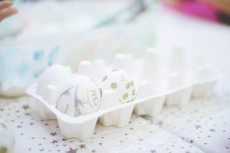
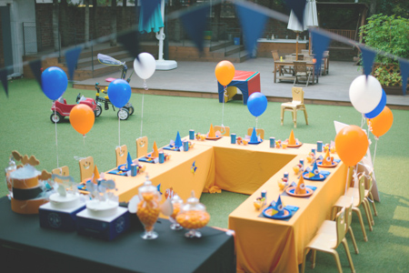
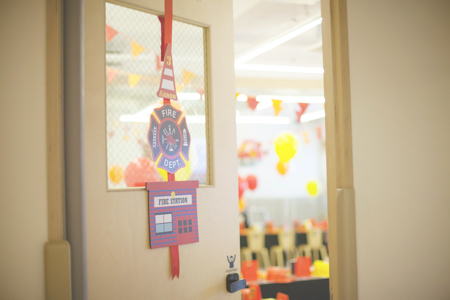
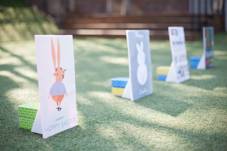
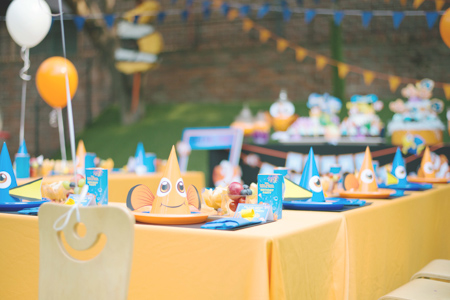
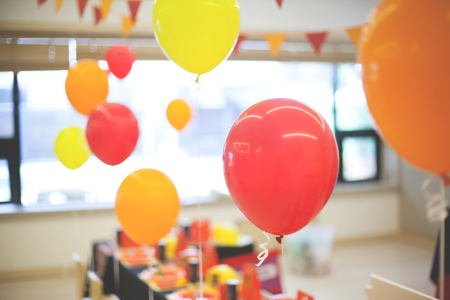
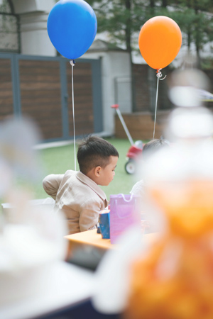
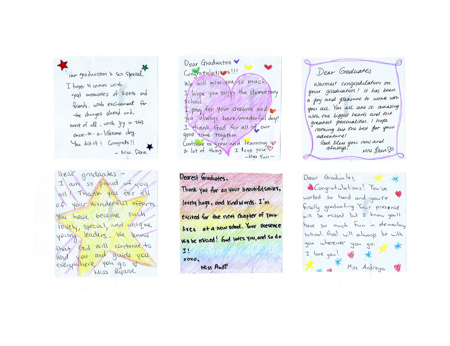
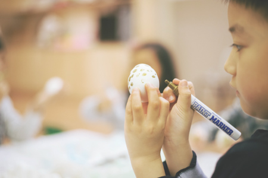

서초구·강남구 프리미엄 유아영어
와이어트 방배동 본원
마당 있는 단독주택에서 시작하는 프리미엄 놀이 몰입 영어
2014년부터 이어온 서초구·강남구 유아영어
와이어트 방배동 놀이 몰입식
와이어트는 2014년 설립 이후 서초구 방배동 서래마을 인근에서 프리미엄 영어유치원(프리스쿨)을 운영해 왔습니다. 방배동·서초동·반포동·도곡동·역삼동·개포동 생활권 학부모가 찾는 영어학원으로, 소수정원 반 운영으로 아이별 언어 발달과 학습 리듬을 세심하게 관찰합니다. 2026년 현재 서초구·강남구 영어유치원 후기·리뷰에서 꾸준히 높은 평가를 받고 있습니다.

단독주택 마당에서 놀이 몰입 영어
서초구·강남구에서 유일한 대형 단독주택 캠퍼스. 넓은 마당에서 이스터 에그헌트, 야외 생일파티, 물놀이 등 자연 속 원어민영어 놀이를 경험합니다. 아파트 상가 학원에서는 불가능한 교육입니다.
원어민 + 한국인 담임 협업
넓은 마당과 쾌적한 단독주택에서 원어민 교사가 영어 몰입 환경을 이끌고, 한국인 담임이 생활 케어를 책임집니다. 소수정원 반 운영으로 아이 한 명 한 명의 정서와 성장을 함께 돌봅니다.

체계적 연령별 커리큘럼
만 3세부터 7세(킨더가든 과정)까지 연령별 맞춤 커리큘럼으로, 놀이에서 파닉스·리스닝·스피킹·리딩·라이팅까지 자연스럽게 이어지는 유아 전문 프로그램입니다. 초등 영어 기초를 완성하는 체계적 영어교육 로드맵입니다.
만 3세부터 7세까지
서초구·강남구 유아영어 추천 와이어트 연령별 로드맵

Polar Cubs(만 3~4세) · 유아영어 입문
영어 환경에 처음 노출되는 유아를 위한 놀이 중심 입문 프로그램입니다. 노래, 율동, 미술, 역할놀이를 통해 영어에 대한 자연스러운 친밀감을 형성합니다.

Explorer(만 4~5세) · 심화 영어
놀이 경험을 토대로 듣기·말하기를 확장하는 몰입 심화 프로그램입니다. 스토리텔링, 파닉스, 창의 프로젝트를 통해 영어 표현력을 키웁니다.

Prep(만 5~7세) · 킨더 준비 과정
초등 입학 전 읽기·쓰기 기초를 다지는 킨더 준비 프로그램입니다. 프레젠테이션과 토론 경험을 통해 학습 자신감을 형성합니다.
대형 단독주택 와이어트 프리미엄 캠퍼스
서초구·강남구 유일 마당 있는 유아영어





서초구·강남구 와이어트 하루 일과
프리미엄 영어몰입 수업 루틴
체계적인 일과 구성으로 아이들이 즐겁게 영어를 습득하고 성장합니다.

Morning · 오전
- 마당 야외 활동 후 English Morning Circle
- 파닉스 및 영어 몰입 수업
- 리딩 및 스토리텔링 활동

Midday · 점심
- 균형 잡힌 점심 식사
- 휴식 및 자유 활동 시간
- 영어 원서 독서 활동

Afternoon · 오후
- 마당 야외놀이 및 창의 프로젝트 활동
- 라이팅 및 발표 수업
- 하원 준비 및 개별 피드백
서초구·강남구 유아영어 추천 와이어트 케어 시스템
유아 맞춤 건강한 하루

소수정원 담임 케어
- 원어민 교사 + 한국인 담임 협업 수업
- 7명 교사진의 전문 케어
- 소수정원 환경에서 개별 아이 성장 관찰 및 피드백
- 반당 8명 이내 소수 그룹 수업

검증된 교재 및 커리큘럼
- 연령별 맞춤 교재 사용
- ESL 4대 영역 통합 커리큘럼
- 다양한 영어 원서 활용 독서 심화
- 정기적 레벨 테스트 및 진도 관리
대형 단독주택 프리미엄 환경
- 서초구·강남구 유일 대형 단독주택 독립 캠퍼스
- 넓은 마당, 야외 놀이터, 독립 건물 안전 관리
- 단독주택 전체를 유아 맞춤으로 설계한 프리미엄 공간
- 방배역 2번 출구 도보 5분, 반포동·서초동·잠원동·양재동에서도 편리한 통학
서초구·강남구 유아영어 추천 1위
와이어트 유치부 입학 상담
마당 있는 단독주택 캠퍼스를 직접 방문하세요. 무료 레벨테스트와 시설 투어를 예약할 수 있습니다.
와이어트 입학 절차 안내
전화/온라인 상담 예약
전화 또는 홈페이지를 통해 편리한 시간에 상담을 예약하세요.
방문 상담 및 시설 견학
단독주택 마당 캠퍼스를 직접 방문하여 교육 환경을 확인하세요.
레벨 테스트
아이의 영어 수준을 파악하여 최적의 반 배정을 안내합니다.
입학 확정 및 등록
입학 서류 제출 후 정식 등록이 완료됩니다.
서초구·강남구 영어유치원 학부모 후기·리뷰
와이어트 리얼 스토리
"단독주택 마당에서 뛰노는 아이를 보면 여기 보내길 잘했다고 느낍니다. 원어민 선생님과 소수정원 수업 덕분에 아이가 자신감 있게 영어로 말해요."
"서초구에서 마당 있는 단독주택 유아영어는 와이어트뿐이에요. 원어민 교사와 소수정원 환경이 완벽합니다. 강남구에서 셔틀로 다니는데 아이가 너무 좋아합니다."
"프리미엄 단독주택 시설에서 소수정원 원어민 수업을 받으니 아이의 영어 실력이 눈에 띄게 성장하고 있어요. 마당에서 놀며 배우는 환경이 최고입니다."
서초구·강남구 와이어트 원어민 교사진
유아영어 전문 선생님
Miss Dee
Lead Educator
Miss Pratt
Creative Program
Miss Alyson
Care Specialist
Miss Robins
Learning Assistant
서초구·강남구 영어유치원 입학 FAQ 2026
학비·원비·셔틀·영어캠프·원어민 안내

만 3~4세부터 입학 가능합니다. 연령별 맞춤 프로그램이 운영되며 유아 전 연령 맞춤 상담이 가능합니다.
놀이 몰입식 중심 영어교육입니다. 체계적인 커리큘럼으로 사고력과 영어 실력을 동시에 키웁니다.
월 100~180만원(상담 시 안내) 기준으로 안내되며 반 편성과 운영시간에 따라 세부 항목이 달라질 수 있습니다. 정확한 비용은 입학 상담 시 안내드립니다.
방배동·도곡동·역삼동·개포동 중심으로 운영하며 학기별 노선은 02-535-7988 상담으로 확인할 수 있습니다.
원어민 교사와 한국인 담임이 팀티칭으로 수업을 운영합니다. 영어 몰입 환경을 조성하면서도 아이 개별 케어가 가능합니다.
02-535-7988 전화 또는 wyattprep@gmail.com 메일로 접수할 수 있으며 방문 상담 예약도 가능합니다.
교육철학, 반당 정원, 통학 동선, 담임 체계를 우선 확인하세요. 와이어트는 방배동 생활권 기준으로 맞춤 상담을 제공합니다.
방배동·도곡동·역삼동·개포동 생활권 통학 상담이 가능하며 셔틀 노선과 소요시간을 개별 안내합니다.
유아부 정규반 중심의 종일 운영 상담이 가능하며 ESL 4대영역과 정서·사회성 활동을 균형 있게 제공합니다.
방배역 2번 출구 도보 5분 거리이며, 서초구·강남구 전역에서 셔틀 통학이 가능합니다. 서초구 유치부 셔틀과 강남구 유치부 셔틀 노선을 운영합니다.
놀이영어·어린이영어 방식으로 역할놀이, 스토리, 음악, 프로젝트 활동을 통해 듣기·말하기를 자연스럽게 확장합니다. 서초 유아영어, 강남 유아영어의 프리미엄 교육을 경험하세요.
ESL 4대영역(듣기·말하기·읽기·쓰기)을 통합한 커리큘럼으로 연령별 언어 발달을 체계적으로 관리합니다.
7명의 교사진을 중심으로 운영하며 반당 약 8명 내외 소수정원 체계를 지향합니다.
연령, 언어노출 경험, 적응도를 함께 확인해 반을 배정하며 유아 전 연령 맞춤 과정을 안내합니다.
반당 8명 내외 소수정원으로 운영해 아이별 관찰과 피드백, 상호작용 밀도를 높입니다.
평일 09:00~18:00 종일 운영으로 맞벌이 가정 문의가 많습니다. 단독주택 마당 캠퍼스에서 소수정원 돌봄을 제공하며 셔틀 하원 동선도 함께 상담합니다.
오전 영어몰입, 점심 및 휴식, 오후 프로젝트 활동으로 구성되며 연령별로 세부 시간표가 다르게 운영됩니다.
반 정원과 시기에 따라 중도 입학이 가능하며 공석 여부와 시작 시점을 상담에서 안내합니다.
설명회 일정은 학기별로 운영되며 상담 등록 시 우선 안내를 받을 수 있습니다.
과정별 포함 항목이 다를 수 있어 원비, 교재, 특별활동 항목을 상담 시 투명하게 안내합니다.
강남구(대치동·역삼동·도곡동·개포동·삼성동) 전역에서 셔틀 통학이 가능합니다. 강남구 유치부 원비와 강남구 유치부 셔틀 노선은 02-535-7988 상담으로 안내합니다.
기본 권역(방배동·도곡동·역삼동·개포동)을 우선 안내하며 확정 시간표는 학기별로 공지합니다.
서울특별시 서초구 동광로33길 10-6에 있으며 방배역 2번 출구 도보 5분에서 가깝습니다.
주소는 서울특별시 서초구 동광로33길 10-6이며 전화는 02-535-7988, 이메일은 wyattprep@gmail.com입니다.
연령별·레벨별 맞춤 교재를 사용하며 영어 원서 독서 프로그램도 함께 운영합니다.
원어민 수업은 영어로 진행되며, 한국인 담임이 생활 관리와 보조 설명을 지원합니다. 연령별 비중은 상담에서 확인할 수 있습니다.
정기 상담, 학습 리포트, 알림장 등을 통해 아이의 학습 진행 상황을 투명하게 공유합니다.
대형 단독주택 독립 건물로 외부인 출입이 차단되며, CCTV·출입관리·정기 방역 시스템을 갖추고 있습니다. 넓은 마당은 안전 펜스로 보호되며 교사가 등·하원 시 직접 인수인계합니다.
종일반·전일제 기준 점심 식사와 오후 간식이 제공됩니다. 방과후 프로그램 연계도 가능하며, 알레르기 등 개별 식이는 사전 상담에서 안내합니다.
방학 기간에는 특별 프로그램 또는 캠프 형태로 운영되며, 일정은 학기별로 별도 공지합니다.
서초구 영어유치원 순위에서 와이어트는 2014년부터 방배동 서래마을 인근 대형 단독주택 캠퍼스를 운영하며 꾸준히 높은 평가를 받고 있습니다. 소수정원 8명, 원어민 교사 상주, 넓은 마당 야외 활동 등이 차별점입니다. 학부모 리뷰 평점 4.9점으로, 서초구·강남구 프리미엄 영어유치원을 찾는 분들께 추천드립니다.
영어유치원(프리스쿨)은 전일제로 하루 종일 영어 몰입 환경에서 교육하며, 놀이·생활·학습을 모두 영어로 진행합니다. 영어학원은 주 2~3회 방과후 수업 위주입니다. 와이어트는 영어유치원(프리스쿨) 형태로, 오전 9시부터 오후 2시 30분까지 원어민 교사와 함께 영어 몰입 교육을 제공합니다.
만 3~4세는 언어 습득의 결정적 시기로, 이 시기에 영어 환경에 노출되면 원어민에 가까운 발음과 자연스러운 영어 감각을 형성할 수 있습니다. 와이어트 Polar Cubs(만 3~4세) 프로그램은 놀이 중심으로 영어에 대한 친밀감부터 시작하여 부담 없이 영어를 시작할 수 있습니다.
와이어트는 서초구 방배동 서래마을 인근(방배역 2번 출구 도보 5분)에 위치한 프리미엄 영어유치원입니다. 서래마을·방배동·사당동·이수동·내방동에서 도보 또는 셔틀로 편리하게 통학할 수 있습니다. 넓은 마당이 있는 대형 단독주택 캠퍼스로 서래마을 학부모님들께 특히 인기가 높습니다.
와이어트 Prep(만 5~7세) 과정은 초등 입학 전 리딩·라이팅 기초를 완성하는 킨더가든 준비 프로그램입니다. 졸업 후 국제학교, 영어 특화 초등학교, 일반 초등학교 영어 심화반 등 다양한 진로로 연계됩니다. 스피킹·리스닝·리딩·라이팅 4대 영역을 균형 있게 발달시켜 초등 영어에 자신감을 갖게 됩니다.
서초구·강남구 프리미엄 영어유치원(프리스쿨) 수업료는 월 80만원~200만원 수준입니다. 와이어트는 월 100~180만원(프로그램별 상이)이며, 교재비와 식비가 포함됩니다. 정확한 학비·원비는 방문 상담 시 프로그램별로 안내드립니다. 02-535-7988로 문의해 주세요.
와이어트는 정원 내 수시 입학이 가능합니다. 2026년 3월 학기, 9월 학기 신입생을 모집하며, 중간 입학도 잔여 정원에 따라 가능합니다. 입학 절차는 전화 상담 → 방문 견학 → 무료 레벨테스트 → 입학 확정 순서로 진행됩니다. 설명회 일정은 전화(02-535-7988)로 문의해 주세요.
네, 와이어트는 여름·겨울 방학 기간 동안 영어캠프를 운영합니다. 기존 원생뿐 아니라 외부 아이들도 참여할 수 있으며, 원어민 교사와 함께 마당 야외 활동, 영어 프로젝트 수업, 스피킹 집중 프로그램 등을 체험합니다. 영어캠프 일정과 비용은 시즌별로 상이하므로 전화로 문의해 주세요.
영어유치원(프리스쿨)은 일반적으로 사설 교육기관으로 분류되어 누리과정 바우처 직접 적용은 어렵습니다. 다만, 일부 지자체에서 영어유아교육 지원금을 제공하는 경우가 있으며, 와이어트에서는 상담 시 학비 분납 등 다양한 납부 방법을 안내드립니다. 자세한 내용은 02-535-7988로 문의해 주세요.
영어유치원의 장점은 매일 영어 몰입 환경에서 자연스러운 영어 습득, 원어민 발음 형성, 글로벌 감각 배양입니다. 단점으로는 비용 부담과 한글 교육 병행 필요성이 있습니다. 와이어트는 원어민영어 몰입 수업과 함께 한국인 담임이 한글·정서 케어를 병행하여 단점을 보완합니다. 소수정원 8명으로 아이별 맞춤 교육이 가능합니다.
와이어트 정규 수업은 평일(월~금) 운영이며, 토요일·주말 정규 수업은 없습니다. 다만, 방학 기간 영어캠프나 특별 이벤트(이스터 에그헌트, 할로윈 파티 등)는 주말에 진행되기도 합니다. 자세한 일정은 학기별로 안내드리며, 맞벌이 학부모를 위한 연장 케어 프로그램(오후 5시까지)도 운영합니다.